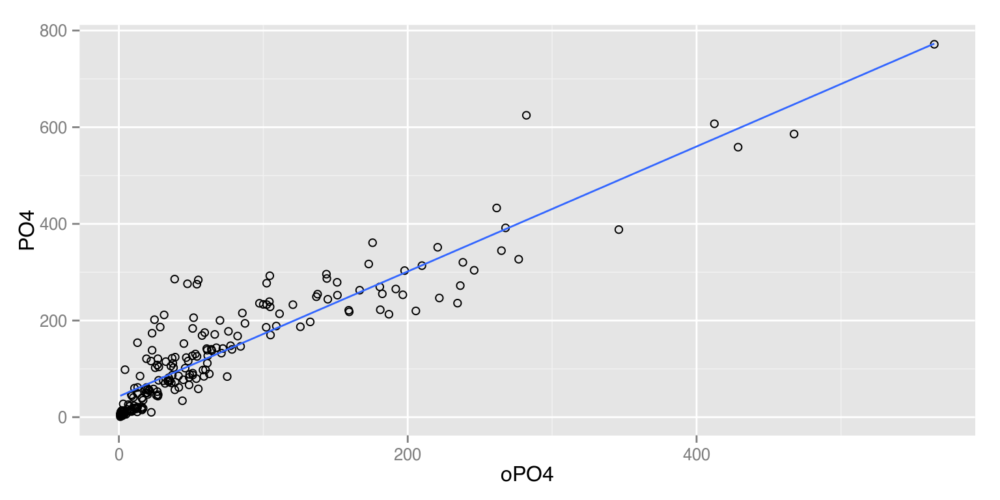

21/10/2014
Proceso
CRISP-DM

Metas
- ¿Por qué quieren el proyecto?¿Qué les falta? ¿Qué necesitan?
- ¿Qué hacen para resolver el problema ahora?¿Por qué no es suficiente?
- ¿Qué recursos existen?¿Tendrás acceso a expertos del dominio?
- ¿Cómo planean utilizar los resultados?¿Cómo harán el deploy? ¿Qué restricciones existen?
- ¿La meta es específica y medible?
Métricas
Exactitud (Accuracy)
Recall
Precisión
False positive rate (FPR)
Expectativas
Establecer las expectativas es una parte crucial al definir el proyecto y los criterios de éxito.
Entender lo que el modelo debe hacer para tener un desempeño aceptable es importante.
Entender lo que el modelo puede hacer con los datos disponibles también.
Expectativas: El mínimo
El mínimo esperado se puede definir usando el modelo nulo.
Se puede entender como el "educated guess".
Si ya hay un modelo o una solución, ese es el modelo nulo.
Si no lo hay, es el modelo más simple:
- adivinando la variable dependiente,
- predecir siempre con la media,
- prediciendo siempre una clase en particular, etc.
- adivinando la variable dependiente,
Expectativas: El mínimo
Cuando tengas un modelo debe de ser mejor que el modelo nulo.
Para saber si es verdaderamente mejor, es necesario correr una prueba de hipótesis.
Expectativas: El máximo
Debes de saber, al principio del proyecto, que tienes los datos para cubrir con las metas planteadas.
La cantidad a determinar es la Varianza Inexplicable (unexplained variance): ¿Cuánto de la variación de tus datos de salida no puede ser explicado por tus variables de entrada?
El límite de exactitud (accuracy) debido a la unexplained variance se conoce como Tasa de Bayes (Bayes rate).
Claro esto tiene sentido, si lo que están pidiendo está en función del accuracy.
Se puede aproximar por un clasificador de vecinos cercanos o construyendo una tabla con las combinaciones de variables posibles.
Data
- ¿Los datos están disponibles?
- ¿Los datos me ayudarán a resolver el problema?
- ¿Son suficientes?
- ¿La calidad es buena?
IMPORTANTE
Reproductibilidad
Debes de ser capaz (o cualquier otro) de repetir tu trabajo sin depender de resultados intermedios.
Todo debe de estar comentado con como reproducirlo o con documentación de donde se obtuvo.
Debes de poder defender tu trabajo
Manten tus scripts bajo control de versiones
IMPORTANTE
Estilo y Convención
Salvo el asunto de la terminación en .R, usa .r
IMPORTANTE
Pruebas
IMPORTANTE
Comunicación
Ejemplo
¿Quién eres?
Eres el científico de datos de un banco alemán, el banco tiene muchas pérdidas debido a malos créditos y quiere reducir sus pérdidas. Te piden realizar esta tarea, indicando que quieren reducir la tasa de pérdidas en un 10%.
Datos
- Usaremos para este ejemplo, los datos de crédito aleman (German data set). Los datos ya se encuentran en
data/german.
Ejercicio
En tu carpeta, crea una subcarpeta german.
Carga de datos
german.url <- paste('http://archive.ics.uci.edu/ml',
'/machine-learning-databases/statlog',
'/german/german.data',
sep='')
german.data <- read.table(german.url,
stringsAsFactors = FALSE,
header = FALSE)
Los datos son un asco…
head(german.data)
## V1 V2 V3 V4 V5 V6 V7 V8 V9 V10 V11 V12 V13 V14 V15 V16 V17 ## 1 A11 6 A34 A43 1169 A65 A75 4 A93 A101 4 A121 67 A143 A152 2 A173 ## 2 A12 48 A32 A43 5951 A61 A73 2 A92 A101 2 A121 22 A143 A152 1 A173 ## 3 A14 12 A34 A46 2096 A61 A74 2 A93 A101 3 A121 49 A143 A152 1 A172 ## 4 A11 42 A32 A42 7882 A61 A74 2 A93 A103 4 A122 45 A143 A153 1 A173 ## 5 A11 24 A33 A40 4870 A61 A73 3 A93 A101 4 A124 53 A143 A153 2 A173 ## 6 A14 36 A32 A46 9055 A65 A73 2 A93 A101 4 A124 35 A143 A153 1 A172 ## V18 V19 V20 V21 ## 1 1 A192 A201 1 ## 2 1 A191 A201 2 ## 3 2 A191 A201 1 ## 4 2 A191 A201 1 ## 5 2 A191 A201 2 ## 6 2 A192 A201 1
Ejercicio
Crea una función
loadenutils.ren tu carpeta, que descargue, si y sólo si no existe un archivogerman.rds. Si no existe, descarga y guarda el archivo.?saveRDS,?readRDS
Transformación de datos
Los nombres de las columnas fueron copiados a mano desde german.odt
german.colnames <- c('Status of existing checking account',
'Duration in month',
'Credit history',
'Purpose',
'Credit amount',
'Savings account/bonds',
'Present employment since',
'Installment rate in percentage of disposable income',
'Personal status and sex',
'Other debtors / guarantors',
'Present residence since',
'Property',
'Age in years',
'Other installment plans',
'Housing',
'Number of existing credits at this bank',
'Job',
'Number of people being liable to provide maintenance for',
'Telephone',
'foreign worker',
'Good.Loan'
)
Transformación de datos
La variable de salida la estoy definiendo como categórica (factor en R)
colnames(german.data) <- german.colnames
german.data$Good.Loan <- as.factor(
ifelse(
german.data$Good.Loan == 1,
'GoodLoan',
'BadLoan'
)
)
Decodificar
german.codes <- list('A11'='... < 0 DM',
'A12'='0 <= ... < 200 DM',
'A13'='... >= 200 DM / salary assignments for at least 1 year',
'A14'='no checking account',
'A30'='no credits taken/all credits paid back duly',
'A31'='all credits at this bank paid back duly',
'A32'='existing credits paid back duly till now',
'A33'='delay in paying off in the past',
'A34'='critical account/other credits existing (not at this bank)',
'A40'='car (new)',
'A41'='car (used)',
'A42'='furniture/equipment',
'A43'='radio/television', 'A44'='domestic appliances', 'A45'='repairs',
'A46'='education', 'A47'='(vacation - does not exist?)',
'A48'='retraining', 'A49'='business', 'A410'='others', 'A61'='... < 100 DM',
'A62'='100 <= ... < 500 DM', 'A63'='500 <= ... < 1000 DM',
'A64'='.. >= 1000 DM', 'A65'='unknown/ no savings account',
'A71'='unemployed', 'A72'='... < 1 year', 'A73'='1 <= ... < 4 years',
'A74'='4 <= ... < 7 years', 'A75'='.. >= 7 years', 'A91'='male : divorced/separated',
'A92'='female : divorced/separated/married',
'A93'='male : single',
'A94'='male : married/widowed',
'A95'='female : single',
'A101'='none',
'A102'='co-applicant',
'A103'='guarantor', 'A121'='real estate',
'A122'='if not A121 : building society savings agreement/life insurance',
'A123'='if not A121/A122 : car or other, not in attribute 6',
'A124'='unknown / no property',
'A141'='bank', 'A142'='stores', 'A143'='none', 'A151'='rent', 'A152'='own',
'A153'='for free', 'A171'='unemployed/ unskilled - non-resident',
'A172'='unskilled - resident', 'A173'='skilled employee / official',
'A174'='management/ self-employed/highly qualified employee/ officer',
'A191'='none', 'A192'='yes, registered under the customers name',
'A201'='yes', 'A202'='no')
Ejercicio
Crea una función
german.decodeen un archivoutils.rdentro de tu carpeta, esta función debe de utilizargerman.codespara decodificar los elementos de todas las columnas (por ejemploA201->yes)Utiliza
lapplypara decodificar todas las columnas degerman.dataUtiliza
dplyrpara decodificar todas las columnas degerman.data
Datos manejables
En este momento deberás de tener archivos 0-load.r, 1-prepare.r y un archivo utils.r dentro de german. Además deberías de tener un archivo german.rds.
Ejercicio
¿Hay algo raro con los datos de préstamo?
¿Cuál crees que debería ser la distribución del resultado del préstamo
Good.Loanrespecto aCredit history?Grafícalo y comenta tus resultados.
Si lo vas a hacer con
ggplot2usa esta guía o este cheatsheet
Tarea
Fue terrible poder hacer la gráfica con
ggplotutilizando los nombres de columnas que pusimos (german.colnames).Modifica el archivo donde tengas
german.colnames(puede serutils.rometadata.r) y sustituye (usando quizástringrogrep) los' 'y'/'por'.'(ve la guía de estilo) y pasa todo a minúsculas.Ejecuta todo de nuevo (¡la ventaja de ser reproducible!)
Intermedio
- Si te quedó desacomodado, este código ordena los
bar charts
credit.history.tbl <- table(german.data$'Credit history')
credit.history.df <- as.data.frame(credit.history.tbl)
colnames(credit.history.df) <- c('credit.history', 'count')
summary(credit.history.df)
credit.history.df <- transform(credit.history.df,
credit.history=reorder(credit.history, count)
)
summary(credit.history.df)
ggplot(credit.history.df) +
geom_bar(aes(x=credit.history, y=count), stat="identity", fill="gray") +
coord_flip() +
theme(axis.text.y=element_text(size=rel(0.8)))
- Aunque no lo colorea ¿Cómo hay que modificarlo?
Ejercicio
Modifica el ejercico anterior para mostrar la gráfica de manera ordenada y sea más claro tu caso.
Sanidad de los datos
El nombre de la columna no significa lo que tu crees que significa
El significado de la columna cambia con el paso del tiempo o la metodología para medir esa variable.
Mucha / muy poca resolución
- Los valores
missingno son realmente faltantes (NAs), si no que significan algo- Regularmente no documentado
- Si es un
csvde seguro a alguien ya le pareció chistoso ponerle comas- Existe una historia parecida para los
tsv,psv, etc.
- Existe una historia parecida para los
summary
Un uso del summary() es detectar problemas en los datos.
- ¿Valores faltantes?
- ¿Hay una variable con muchos faltantes?¿Por qué?¿Es un error? ¿Significa algo?
- ¿Valores inválidos?
- ¿Hay negativos donde no debería de haber? (Como en edad, ingreso, estatura)
- ¿Texto en lugar de números?
- ¿Outliers?
- Son aquellos valores que no crees que deberían de estar (En el ejemplo de edad 1400 años)
summary
- ¿Rangos?
- Es importante saber cuanto varía la variable.
- Si es muy amplio, puede ser un problema para algunos algoritmos de modelado.
- Si varía muy poco (o nada) no puede ser usado como predictor.
- ¿Unidades?
- ¿El salario es mensual?¿Quincenal?¿Por hora?
- ¿Los intervalos de tiempo están en segundos?¿Años?
- ¿Las longitudes? ¿La moneda?
Ejercicio
Revisa german.data con summary(), reporta alguna anomalía.
¿Quién eres?
Como el dinero no alcanza, tomas otro trabajo rápido para una ONG. Quieren predecir la concentración de algas en ríos de la región. Tomaron datos durante un año.
Cada observación es el efecto de agregar varias muestras de agua recolectadas en el mismo río por un periodo de 3 meses en la misma estación del año.
Más datos
Usaremos, además del German data set, los datos de la competición COIL de 1999 sobre contaminación de ríos
Ya se encuentran en
data/algas.
Ejercicio
Repite los pasos realizados para
german.dataconalgas.Revisa con
summary(), reporta alguna anomalía.
Usando gráficas
El resumen estadístico quizá no cuente toda la historia.
El siguiente paso es explorar mediante gráficas.
Es un proceso iterativo.
Una sola variable
- ¿Cuál es el pico? ¿Coincide con la media? ¿La mediana? ¿Existe?
- ¿Cuántos picos?
- Si es
bimodalomultimodalquizá haya varias poblaciones en lugar de una y será mejor modelar por separado. - ¿Qué tan normal es? ¿El log-normal?
- Utiliza una gráfica
Q-Q
- Utiliza una gráfica
- ¿Cuánto varía? ¿Está concentrada en un intervalo o una categoría?
- ¿Outliers? -> Usa gráficas de
boxplot. - Da preferencia a los
density plots, en esta gráfica es más importante la forma que los valores actuales del eje vertical. - Si los datos están concentrados en un solo lado de la gráfica (
skewed) y es no negativa es bueno representarla enlog10. - Una grafica de barras no da más información que
summary(), aunque alguna gente las prefiere.- Es bueno mostrarla horizontal y ordenada.
Tarea
- Es importante en la etapa de exploración, poder generar varias gráficas de manera automática y simple para analizarlas visualmente y tener una idea de los datos.
- Crea una función que genere los tipos de gráfica correspondiente para cada variable del
data.frame. - Guárdala en
utils.r. - Úsala en
2-eda.ren ambas carpetas:algasygerman.
Dos variables
- ¿Existe relación entre dos variables de entrada? ¿entre una entrada y la variable de salida?
- ¿Qué tan fuerte?
- ¿Qué tipo de relación?
Scatter plotentre dos variables numéricas, calcular la correlación de Pearson en un conjuntosanode los datos, visualizar la curva que mejor representa los datos.Stacked bar chartspara dos variables categóricas.- Si quieres comparar razones a lo largo de las categorías lo mejor es usar un
filled bar chart. En este caso se recomienda agregar unrugpara tener una idea de la cantidad de individuos. - Si hay múltiples categorías por variable, es mejor usar
facets.
- Si quieres comparar razones a lo largo de las categorías lo mejor es usar un
- Para variable categórica y numérica es recomendable usar
boxplot(en su versión deviolinojitter).
Tarea
- Es importante en la etapa de exploración, poder generar varias gráficas de manera automática y simple para analizarlas visualmente y tener una idea de los datos.
- Crea una función que genere los tipos de gráfica para cada par de variables del
data.frame. Esta función debe de recibir dos parámetros, uno que indique si genera todas las combinaciones de dos variables o recibe una lista de variables en las cuales generar las combinaciones. - Guárdala en
utils.r. - Úsala en
2-eda.ren ambas carpetas:algasygerman.
Valores faltantes: NAs
- Los pasos son los siguientes:
- Identificar los datos faltantes.
- Examinar las causas de los datos faltantes.
- Preguntar al domain expert, etc.
- Borrar los casos (o columnas) que contienen los
NAso reemplazar (imputar) losNAscon valores razonables.
- La teoría la veremos más adelante en el curso.
NOTA: Todas estás recomendaciones aplican igual para outliers
Valores faltantes: NAs
Es importante recordar que en
Rla operaciónx == NAnunca regresaTRUE, siempre hay que utilizar las funcionesis.na(),is.nan()eis.infinite().El método
complete.casesidentifica los renglones (individuos) deldata.frameque no tienen ningúnNAen sus columnas (variables).- Es posible usar
sumymeanconis.napara obtener el total por columna de faltantes y el porcentaje.- ¿Por qué?
Valores faltantes
Aunque más adelante veremos técnicas más poderosas, vale la pena mencionar el ejemplo mostrado en R in action, cap. 15.
La técnica nos permite determinar si los faltantes en una variable están correlacionados con otra.
x <- as.data.frame(abs(is.na(df))) # df es un data.frame head(df) head(x) # Extrae las variables que tienen algunas celdas con NAs y <- x[which(sapply(x, sd) > 0)] # Da la correación un valor alto positivo significa que desaparecen juntas. cor(y)
Ejercicio
Genera un reporte para ambos conjuntos de datos que reporte el estado de los valores missing.
Muestra la matriz de correlación faltante en una gráfica.
¿Qué puedes entender?
Variables faltantes: Remover observaciones
Las variables con más faltantes son Promedio de Cloruro Cl (10) y Promedio de Clorofila Chla (12).
summary(algas[-grep(colnames(algas),pattern = "^a[1-9]")]) # Nota el uso del grep
## temporada tamaño velocidad mxPH mnO2 ## autumn:40 large :45 high :84 Min. :5.600 Min. : 1.500 ## spring:53 medium:84 low :33 1st Qu.:7.700 1st Qu.: 7.725 ## summer:45 small :71 medium:83 Median :8.060 Median : 9.800 ## winter:62 Mean :8.012 Mean : 9.118 ## 3rd Qu.:8.400 3rd Qu.:10.800 ## Max. :9.700 Max. :13.400 ## NA's :1 NA's :2 ## Cl NO3 NO4 oPO4 ## Min. : 0.222 Min. : 0.050 Min. : 5.00 Min. : 1.00 ## 1st Qu.: 10.981 1st Qu.: 1.296 1st Qu.: 38.33 1st Qu.: 15.70 ## Median : 32.730 Median : 2.675 Median : 103.17 Median : 40.15 ## Mean : 43.636 Mean : 3.282 Mean : 501.30 Mean : 73.59 ## 3rd Qu.: 57.824 3rd Qu.: 4.446 3rd Qu.: 226.95 3rd Qu.: 99.33 ## Max. :391.500 Max. :45.650 Max. :24064.00 Max. :564.60 ## NA's :10 NA's :2 NA's :2 NA's :2 ## PO4 Chla ## Min. : 1.00 Min. : 0.200 ## 1st Qu.: 41.38 1st Qu.: 2.000 ## Median :103.29 Median : 5.475 ## Mean :137.88 Mean : 13.971 ## 3rd Qu.:213.75 3rd Qu.: 18.308 ## Max. :771.60 Max. :110.456 ## NA's :2 NA's :12
Variables faltantes: Remover observaciones
Antes de removerlas es recomendable verlos, guardarlos y contarlos:
nrow(algas[!complete.cases(algas),])
Hay 16 observaciones en las cuales tienen NAs
algas.con.NAs <- algas[!complete.cases(algas),]
Siempre es bueno guardarlas, si se piensan eliminar del dataset.
Variables faltantes: Remover observaciones
Las observaciones con NAsson las siguientes:
algas.con.NAs[c('mxPH', 'mnO2', 'Cl', 'NO3', 'NO4', 'oPO4', 'PO4', 'Chla')]
## mxPH mnO2 Cl NO3 NO4 oPO4 PO4 Chla ## 28 6.80 11.1 9.000 0.630 20 4.000 NA 2.70 ## 38 8.00 NA 1.450 0.810 10 2.500 3.000 0.30 ## 48 NA 12.6 9.000 0.230 10 5.000 6.000 1.10 ## 55 6.60 10.8 NA 3.245 10 1.000 6.500 NA ## 56 5.60 11.8 NA 2.220 5 1.000 1.000 NA ## 57 5.70 10.8 NA 2.550 10 1.000 4.000 NA ## 58 6.60 9.5 NA 1.320 20 1.000 6.000 NA ## 59 6.60 10.8 NA 2.640 10 2.000 11.000 NA ## 60 6.60 11.3 NA 4.170 10 1.000 6.000 NA ## 61 6.50 10.4 NA 5.970 10 2.000 14.000 NA ## 62 6.40 NA NA NA NA NA 14.000 NA ## 63 7.83 11.7 4.083 1.328 18 3.333 6.667 NA ## 116 9.70 10.8 0.222 0.406 10 22.444 10.111 NA ## 161 9.00 5.8 NA 0.900 142 102.000 186.000 68.05 ## 184 8.00 10.9 9.055 0.825 40 21.083 56.091 NA ## 199 8.00 7.6 NA NA NA NA NA NA
de los cuales, 62 y 199 tienen más del 50% (6) de las variables independientes nulas.
Aunque remover las observaciones con NAs NO sea la estrategia, quitar las observaciones con muchas columnas vacías, puede ser recomendable.
Variables faltantes: Remover observaciones
En los casos en los que no es posible hacer una explorarción visual, se puede utilizar el siguiente código
# ¿Cuántos NAs hay por observación? apply(algas, 1, function(x) sum(is.na(x)))
## [1] 0 0 0 0 0 0 0 0 0 0 0 0 0 0 0 0 0 0 0 0 0 0 0 0 0 0 0 1 0 0 0 0 0 0 0 ## [36] 0 0 1 0 0 0 0 0 0 0 0 0 1 0 0 0 0 0 0 2 2 2 2 2 2 2 6 1 0 0 0 0 0 0 0 ## [71] 0 0 0 0 0 0 0 0 0 0 0 0 0 0 0 0 0 0 0 0 0 0 0 0 0 0 0 0 0 0 0 0 0 0 0 ## [106] 0 0 0 0 0 0 0 0 0 0 1 0 0 0 0 0 0 0 0 0 0 0 0 0 0 0 0 0 0 0 0 0 0 0 0 ## [141] 0 0 0 0 0 0 0 0 0 0 0 0 0 0 0 0 0 0 0 0 1 0 0 0 0 0 0 0 0 0 0 0 0 0 0 ## [176] 0 0 0 0 0 0 0 0 1 0 0 0 0 0 0 0 0 0 0 0 0 0 0 6 0
Si queremos ver las observaciones:
algas[apply(algas, 1, function(x) sum(is.na(x))) > 2,]
## temporada tamaño velocidad mxPH mnO2 Cl NO3 NO4 oPO4 PO4 Chla a1 ## 62 summer small medium 6.4 NA NA NA NA NA 14 NA 19.4 ## 199 winter large medium 8.0 7.6 NA NA NA NA NA NA 0.0 ## a2 a3 a4 a5 a6 a7 ## 62 0.0 0.0 2 0 3.9 1.7 ## 199 12.5 3.7 1 0 0.0 4.9
Lo cual confirma nuestra exploración visual.
Variables faltantes: Remover observaciones
Si eliminar las observaciones con NAs va a ser el camino que vamos a tomar, habrá que hacerlo de manera reproducible
indicesConNAs <- function(data, porcentaje=0.2) {
n <- if (porcentaje < 1) {
as.integer(porcentaje * ncol(data))
} else {
stop("Debes de introducir el porcentaje de columnas con NAs.")
}
indices <- which( apply(data, 1, function(x) sum(is.na(x))) > n )
if (!length(indices)) {
warning("No hay observaciones con tantos NAs
(la respuesta de la función es vacía),
no se recomienda indexar el data.frame con esto")
}
indices
}
Ejercicio: ¿Qué hace esta función?
Variables faltantes: Remover observaciones
indicesConNAs(algas, 0.2)
## [1] 62 199
indicesConNAs(algas, 0.8)
## Warning in indicesConNAs(algas, 0.8): No hay observaciones con tantos NAs ## (la respuesta de la función es vacía), ## no se recomienda indexar el data.frame con esto
## integer(0)
# Si queremos remover las que tengan más del 20% de NAs... algas <- algas[-indicesConNAs(algas, 0.2),]
Ejercicio: Agrega esta función a tu archivo utils.r.
Variables faltantes: Renivelar
Si la variable es categórica (
factor), puedes crear una nueva variable y poner losNAs a un nuevolevel, e.g.missing- Por ejemplo, suponiendo que hubiese una variable categórica con faltantes en nuestros dataset
dataset$cat.with.NAs.fix <- ifelse(is.na(dataset$cat.with.NAs),
"missing",
ifelse(dataset$ccat.with.NAs == TRUE,
# o el valor que sea
"level_1",
"level_2"))
Sólo recuerda que es posible que el valor de
NAsignifique algo.Esto también se puede hacer con variables numéricas, si primero las vuelves categóricas ( binning)
Variables faltantes: Central
- Una estrategia es rellenar los valores faltantes con alguna medida de centralidad.
- Media, mediana, moda, etc.
Para variables distribuidas normalmente, esta opción es la mejor.
Pero para variables skewed o con outliers esta decisión puede ser desastrosa.
Por lo tanto, esta estrategia no se debe de utilizar salvo una exploración previa de las variables.
Tarea
¿A qué variables le puedes de
algasle puedes aplicar este procedimiento?¿Qué puedes decir de
german?A las variables que no se les puede aplicar, explica por qué no.
Esta decisión debe de ser reproducible, agrega a
utils.runa función que impute en las variables conNAsel valor central (mediansi es numérica,modasi es categórica). La función debe de tener la siguiente firma:
imputarValorCentral <- function(data, colnames) {...}
Variables faltantes: Correlación
Calculando rápidamente la correlación
symnum(
cor(algas[c('mxPH', 'mnO2', 'Cl', 'NO3', 'NO4', 'oPO4', 'PO4', 'Chla')],
use="complete.obs")
)
## mP mO Cl NO3 NO4 o P Ch ## mxPH 1 ## mnO2 1 ## Cl 1 ## NO3 1 ## NO4 , 1 ## oPO4 . . 1 ## PO4 . . * 1 ## Chla . 1 ## attr(,"legend") ## [1] 0 ' ' 0.3 '.' 0.6 ',' 0.8 '+' 0.9 '*' 0.95 'B' 1
Observamos que NO3 y NO4 y oPO4 y PO4 están altamente relacionadas (> 0.9).
Si removiste las observaciones 62 y 199 no hay columnas que tengan vacíos a NO3 y NO4 a la vez.
Variables faltantes: Correlación
library(ggplot2) ggplot(data=algas) + aes(x=oPO4, y=PO4) + geom_point(shape=1) + # Usamos una bolita para los puntos geom_smooth(method=lm, se=FALSE)

# Mostramos la linea de la regresión y no mostramos la región de confianza
Variables faltantes: Correlación
algas <- algas[-indicesConNAs(algas),] lm(PO4 ~ oPO4, data=algas)
## ## Call: ## lm(formula = PO4 ~ oPO4, data = algas) ## ## Coefficients: ## (Intercept) oPO4 ## 42.897 1.293
Entonces la fórmula es
\[ PO4 = 42.897 + 1.293*oPO4 \]
Ejercicio: Crea una función que sustituya los NAs con el valor dado por la regresión lineal recién calculada (No automatices la regresión lineal)
Variables faltantes: Similitud
- Podemos suponer que si dos observaciones son similares y una de ellas tiene
NAsen alguna variable, hay una alta probabilidad de que esa variable tenga un valor similar al valor de esa variable en la otra observación.- Obviamente es una suposición…
- Debemos definir la noción de similar
- Y esto significa definir un espacio métrico en el espacio que usamos para describir las observaciones.
- Obviamente, otra gran suposición…
Variables faltantes: Similitud
- Para variables numéricas se puede usar la distancia euclídea
\[ d(\vec{x}, \vec{y}) = \sqrt{\sum_{i=1}^p(\vec{x}_i - \vec{y}_i)} \]
- Si son nominales las variables
\[ d(\vec{x}, \vec{y}) = \sqrt{\sum_{i=1}^p \delta_i(\vec{x}_i, \vec{y}_i)} \]
donde \(\delta(\vec{x}, \vec{y})\) es a delta de Kronecker.
Variables faltantes: Similitud
Una vez definida la similitud, debemos de definir el valor que imputar al
NA.Una opción es utilizar una medida de centralidad de los \(k\) observaciones más cercanas.
El Promedio con pesode los valores de los vecinos, es otra opción. El peso se puede determinar de varias maneras, pero usar como kernel una función gaussiana.
\[ peso(d) = e^{-d} \]
donde \(d\) es la distancia de una observación a la que estamos considerando.
Variables faltantes: Similitud
- Es importante normalizar los valores numéricos antes de calcular las distancias.
\[ \vec{x}_{normalizado} = \frac{\vec{x}_i - \bar{x}}{\sigma_{x}} \]
Ejercicio: ¿Por qué?
Tarea
- Formen equipos de dos personas, implementen una función que impute por similitud con la firma
imputarSimilitud <- function(data, num_vecinos) { ... }
Aplíquelo a
algasygerman.¿Son muy diferentes las estadísticas ignorando los
NAscomparadas con este método?Agréguelo a su reporte de exploración de ambos datasets. Explíque cuál método de imputació usó y por qué.
Resumen de EDA
- En general la exploración de datos se divide en tres pasos:
- Verificar la distribución de las variables individuales
- Identificando outliers, valores faltantes \(\to\) transformación, eliminación del data set, etc.
- Verificar la relación entre las variables dependientes y los predictores
- Se podrá usar en
feature selection
- Se podrá usar en
- Relación entre los predictores
- Eliminación de variables redundantes
- Verificar la distribución de las variables individuales
Preparación para modelado
Hasta ahora…
Deberías de contar en este momento con dos documentos, de análisis exploratorio. Estos documentos son internos y son para que te familiarices con los datos.
- El siguiente paso es preparar los datos. Esta actividad también genera un reporte, pero este reporte servirá (además de bitácora) como herramienta de comunicación con otros equipos y de estandarización para el modelado.
- e.g. Podría ser la base de un documento de diseño de ETL.
En la carpeta
plantillasestá el archivodata_preparation.Rmdeste funge como plantilla para el reporte.
Tarea
¿Recuerdas el ejercicio de arreglar los nombres de variables? Crea una función que lo haga, y además agrega la funcionalidad de que cambie los nombres de variables
camelCaseacamel.case.La firma de dicha función debe de ser
normalizarNombres <- function(nombres_de_columnas) { ... }
NOTA: El paquete rattle tiene una función llamada nomVarNames que hace exactamente esto, puedes ver su código para inspirarte.
- En este momento es quizá una buena idea, dejar de duplicar código y concentrar todas las funciones de
utils.rque se puedan reutilizar en un archivofunctions.r.
Transformación de datos
- Normalizar
- Es útil cuando las cantidades absolutas son menos importantes que las relativas.
- Normalizar y reescalar
- Usar la desviación estándar como unidad de medida.
- Tiene mucho sentido si la distribución es simétrica.
- Si no lo es, es posible que sea
lognormally distributed (como el ingreso monetario o los gastos), una transformación
log10()lo hará útil.
Transformación de datos
- Es una buena idea usar
logsi el rango de tus datos cubre varios ordenes de magnitud.- Regularmente, estas variables vienen de procesos multiplicativos en lugar de aditivos.
- Si el rango incluye cantidades negativas, usa (crea) una función
signedLog10
signedLog10 <- function(x) {
ifelse(abs(x) <= 1.0, sign(x)*log10(abs(x)))
}
Columnas de procedencia
Un aspecto que siempre es olvidado, o que no se considera importante debido a los
blogs, es el versionado de control de los datos.- Esto se puede implementar, agregando columnas para indicar de donde vienen los datos, o con qué procedimiento de limpieza se generaron, etc.
- Se puede utilizar el mismo
iddel código del ETL guardado engithub.
- Se puede utilizar el mismo
data_preparation.Rmd
Tarea
Realiza los reportes para
algasygermanusando la plantilladata_preparation.Rmd.Se va a presentar por equipo.